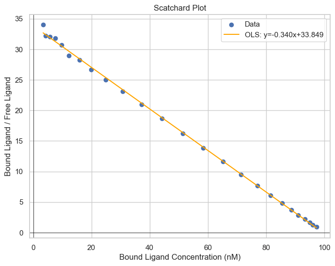
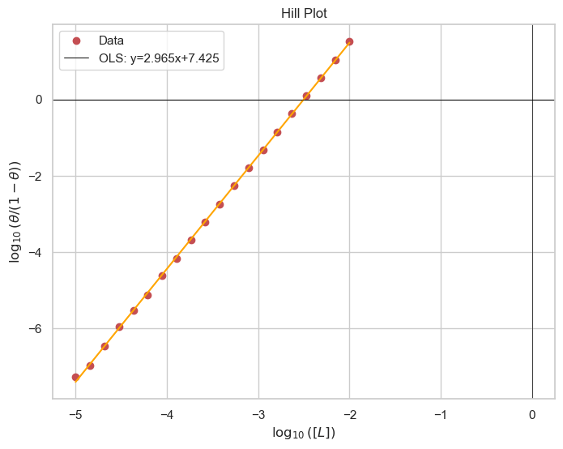

np.random.seed(0)
# Simulated data (specific binding and free ligand concentrations)
P_total = 100e-9
K_D = 3e-9
L_free = np.geomspace(1e-10,1e-7,25)
f = L_free/(L_free+K_D)+np.random.normal(size=25,scale=1e-3)
P_L = f*P_total
model = sm.OLS(P_L/L_free,
sm.add_constant(P_L*1e9))
results = model.fit()
# Create the Scatchard plot
plt.figure(figsize=(8, 6))
plt.scatter(P_L*1e9,P_L/L_free, marker='o')
plt.plot(P_L*1e9,
results.predict(sm.add_constant(P_L*1e9)),
color='orange')
plt.xlabel('Bound Ligand Concentration (nM)')
plt.ylabel('Bound Ligand / Free Ligand')
plt.title('Scatchard Plot')
plt.grid(True)
plt.legend(['Data',
f'OLS: y={results.params[1]}x+{results.params[0]}'])
plt.show()
Protien-Ligand Binding
Introduction
Ligand binding is a foundational concept in biochemistry and pharmacology, encompassing the interaction between a ligand (a molecule that binds to another distinct larger molecule) and a protein, often a receptor. Understanding ligand binding is essential for elucidating biological functions, drug actions, and various cellular processes. In this chapter, we will explore ligand binding and its analytical representation through Scatchard and Hill plots, essential tools for interpreting ligand-receptor interaction data and inferring binding affinities and cooperativities.Ligand Binding and Receptor Theory
Ligand binding involves the reversible interaction between a ligand (L) and its binding site on a protein (P), usually forming a ligand-protein complex (PL)Induced Fit Model
Ligands induce conformational changes in proteins to enable optimal interaction.Lock and Key Model
Ligands fit into specific sites on proteins, like a key fits into a lock, with no alteration in the protein structure.Binding Terminology
- Specificity: Refers to the ability of a ligand to bind specifically to its corresponding binding site.
- Affinity: Reflects the strength of the ligand-protein interaction.
Types of Receptors
One major way to classify receptors is based on their location. The two main locations would be on the cell surface and intracellular.Cell Surface
Intracellular
- Nuclear Receptors
- Cytosolic Receptors
Cooperative Binding and Allosteric Regulation
Positive Allosteric Regulation
Negative Allosteric Regulation
Binding Isotherm
Let us consider a ligand, L, that binds to a protein, P. $$P+L\rightleftharpoons P\cdot L$$ The equilibrium for this reaction is $$K_A=\frac{[P\cdot L]}{[P][L]}$$ Although it is traditional to talk in terms of the dissociation reaction $$K_D=\frac{1}{K_D}=\frac{[P][L]}{[P\cdot L]}$$ We can talk about the binding energy for the reaction through $$\Delta G^0 = -RT \ln(K_A)$$ A lower value of Kd indicates a stronger affinity for the receptor.Fraction bound
Let us define a quantity, f, which is the fraction of proteins bound to ligand. $$f\equiv \frac{[P\cdot L]}{[P]+[P\cdot L]}$$ It can be shown by substituting in the dissociation equilibirium that $$f=\frac{[L]}{[L]+K_D}$$ We can see that when \([L]=K_D\), 50% of the proteins are bound to ligands. In the common situation where the concentration of ligand is much greater than the concentration of receptor protein, we can make the estimation
$$[L]_{\text{free}}\approx[L]_{\text{total}}$$
In the common situation where the concentration of ligand is much greater than the concentration of receptor protein, we can make the estimation
$$[L]_{\text{free}}\approx[L]_{\text{total}}$$
Scatchard Plot
Since the receptor affinity is an important biochemical quantity, we can measure it via Schartchard plots. $$\frac{[L]_{\text{bound}}}{[L]}=-\frac{1}{K_D}[L]_{\text{bound}}+\frac{[P]_{\text{total}}}{K_D}$$ Perhaps an easier way to visualize it is to look at the regular binding isotherm graph. Take any point and note its y-value. For example, \([L]=K_D\), you'll see the the fraction bound is 1/2. If you had twice the amount of ligand in the solution, so that now \([L]=2\times K_D\), your fraction (of protein) bound is not 1, rather it is less. So you can see from the hyperbolic shape of the graph that for the same marginal amount of ligand being added, your change in the fraction of proteins bound is less positive as [L] gets larger, asymptotically approaching f=1. \([P\cdot L]=[L]_{\text{bound}}\)for the specific case, so you can also think of it in terms of not doubling when you go from \([L]=K_D\) to \([L]=2K_D\). So, as [L] goes to infinity, \([L]_{\text{bound}}\) approaches a finite value, which is \([P_{\text{total}}]\), so mathematically when \([L]_{\text{bound}}\) is at its highest value (most right on x axis for Scatchard), \(\frac{[L]_{\text{bound}}}{[L]_{\text{free}}}\) would be a finite number over infinity, or zero, where \([L]_{\text{free}}\approx [L]\) when \([L]_{\text{free}}\gg [L]_{\text{bound}} \)
To somewhat draw a parallel to a similar concept from general chemistry is percent ionization in weak acids. As you increase the concentration of your weak acid in a solution, the percent that is in the dissociated state will go down and the ratio \([A^{-}]/[HA]\)will go down. So at a 100mM concentration of weak acid, you will have a higher [A-] than you would at 1mM, BUT the ratio of \(\frac{[A-]}{[HA]+[A-]}\) or \([A^{-}]/[HA_{total}]\) is smaller in the 100mM solution. You get diminishing returns.
Hill Equation
Hill plots are pivotal for studying cooperative ligand binding, often observed in proteins with multiple binding sites, such as hemoglobin. Cooperative binding is characterized by the protein's affinity for the ligand, depending on whether other binding sites are occupied. The Hill equation provides a sigmoidal (S-shaped) curve that characterizes the cooperative binding or enzymatic activity of a molecule with multiple binding sites or functional domains.Hill Coefficient (n): The Hill coefficient indicates the degree of cooperativity in the binding or enzymatic reaction. When \(n\gt 1\), it signifies positive cooperativity, suggesting that binding of one ligand molecule enhances the binding of subsequent ligand molecules. When \(n\lt 1\), it suggests negative cooperativity, where the binding of one ligand molecule inhibits the binding of others.
np.random.seed(0)
# Simulated data
substrate_concentration = np.geomspace(1e-5,1e-2,20)
# Hill equation function
def hill_equation(L, Kd, n):
try:
return (L**n) / (Kd + (L**n))
except:
print(f'error for {L},{Kd},{n}')
return -1
real_Kd = 3e-8
real_n = 3
binding_saturation = np.array([hill_equation(L+np.random.normal(scale=1e-6), real_Kd, real_n) for L in substrate_concentration])
# Fit the Hill equation to the data (you may use a curve-fitting library for a more accurate fit)
from scipy.optimize import curve_fit
params, covariance = curve_fit(hill_equation, substrate_concentration, binding_saturation, maxfev=10000)
Km_fit, n_fit = params
# Generate a range of substrate concentrations for the Hill curve
x_fit = np.linspace(substrate_concentration[0], substrate_concentration[-1], 500)
# Calculate the reaction rates using the fitted parameters
y_fit = hill_equation(x_fit, Km_fit, n_fit)
# Create the Hill plot
plt.figure(figsize=(8, 6))
plt.plot(substrate_concentration,
binding_saturation, 'ro', label='Experimental Data')
plt.plot(x_fit, y_fit, 'b-', label='Hill Equation Fit')
plt.xlabel('Substrate Concentration (M)')
plt.ylabel('Fraction Bound')
plt.title('Hill Equation')
plt.ylim(-.05,1)
plt.legend()
plt.grid()
plt.show()
Hill Plot
While curve fitting is becoming increasingly popular, parameter determination by linear regression is still an option as it has a low technological barrier. The Hill plot linearizes the above Hill equation to the following form: $$\log(\frac{\theta}{1-\theta})=n\log[L]-\log[K_d]$$ This allows for determination of n by the slope and \(K_d\) by the constant. 
theta_ratio = binding_saturation/(1-binding_saturation)
plt.figure(figsize=(8, 6))
plt.plot(np.log10(substrate_concentration),
np.log10(theta_ratio), 'ro', label='Experimental Data')
#plt.plot(x_fit, y_fit, 'b-', label='Hill Equation Fit')
plt.xlabel(r'$\log([L])$')
plt.ylabel(r'$\log(\theta/(1-\theta))$')
plt.title('Hill Plot')
plt.axhline(0, color='black', linewidth=0.7)
model = sm.OLS(np.log10(theta_ratio),
sm.add_constant(np.log10(substrate_concentration)))
results = model.fit()
plt.plot(np.log10(substrate_concentration),
results.predict(sm.add_constant(np.log10(substrate_concentration))),
color='orange')
plt.legend(['Data',
f'OLS: y={results.params[1]}x+{results.params[0]}'])
#plt.legend()
plt.grid()
plt.show()
Cooperativity and Hill Coefficient
- If n>1, the binding is cooperative
- If \(n\lt 1\), the biding is negatively cooperative
Summary
Understanding ligand binding and being proficient in interpreting Scatchard and Hill plots are fundamental for researchers in biochemistry, molecular biology, and pharmacology. These plots allow scientists to elucidate the underlying mechanisms of ligand-protein interactions, revealing insights into protein functionality, drug affinity, and the cooperative nature of ligand binding.Analyzing ligand binding through these plots is integral for developing therapeutic agents with desired affinities and specificities, ultimately facilitating the design of more effective and targeted drugs. They also play a crucial role in exploring novel drug-receptor interaction mechanisms, paving the way for innovations in therapeutic interventions.
Ligand Binding Practice Exercises
- Define what a ligand is in biochemical terms and how it interacts with a target molecule.
- How does ligand concentration affect the ligand-binding equilibrium?
- Define the Hill coefficient and explain its significance in ligand binding studies.
- How can the Hill plot be used to infer the cooperativity of ligand binding to a protein?
- What are the differences between the Scatchard plot and the Hill plot in representing ligand binding data?
- How would the presence of competitive inhibitors affect the Scatchard plot of a ligand-receptor interaction?
- Differentiate between cell surface receptors and intracellular receptors with examples.